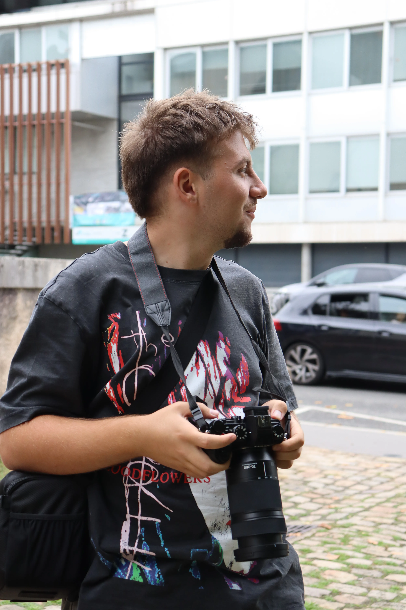

ANDREETTI
andreetti.photography
Photographe portrait, sport & événementiel · Yonne & Dijon · Bourgogne
QUI JE SUIS
Je m'appelle Alexandre, photographe basé dans l'Yonne et à Dijon. Portrait, sport, événementiel : je capture l'authenticité des moments.
Suivez mon travail au quotidien
Mes dernières photos et coulisses, c'est sur Instagram.
Ils m'ont fait confiance
Les premiers témoignages clients seront publiés ici prochainement.
Vous avez travaillé avec moi ? Votre avis compte énormément.
Donner mon avis sur GoogleZones d'intervention
Basé dans l'Yonne et à Dijon, je me déplace dans toute la région pour vos séances et reportages.
- Auxerre
- Sens
- Joigny
- Avallon
- Tonnerre
- Migennes
- Villeneuve-sur-Yonne
- Toute l'Yonne (89)
- Dijon
- Agglomération dijonnaise
- Côte-d'Or (21)
PORTFOLIO
PRESTATIONS
Des prestations sur mesure
Séance individuelle, famille, photo professionnelle. Livraison des photos retouchées sous 14 jours.
- Séance 1 h
- Galerie privée en ligne
- Photos retouchées HD
Matchs, compétitions, clubs sportifs, équipes. Photos d'action haute vitesse.
- Couverture demi-journée
- Sélection action & portraits
- Tri & retouche inclus
Soirées, associations, spectacles, concerts. Couverture complète de l'événement.
- Couverture complète
- Reportage & ambiances
- Livraison rapide
Devis personnalisé gratuit · Déplacement Yonne, Dijon & environs inclus
Comment ça se passe
Échange
On discute de votre projet et de vos attentes.
Devis
Je vous propose une formule claire et adaptée.
Séance
Le jour J, on capture les vrais moments.
Livraison
Galerie privée et photos retouchées sous 14 jours.
Questions fréquentes
Comment se déroule une séance photo ?
Combien coûte une prestation ?
Comment et quand vais-je recevoir mes photos ?
Qui a les droits sur les photos ?
Que se passe-t-il en cas de mauvais temps ?
Comment réserver une date ?
Je ne suis pas à l'aise devant un objectif, c'est grave ?
Tu te déplaces jusqu'où ?
CONTACT
Coordonnées
À PROPOS

Alexandre Andreetti
Photographe passionné de 19 ans, basé dans l'Yonne (89) et à Dijon, en Bourgogne. Portrait, sport, événementiel : je capture les moments authentiques et les émotions vraies.
J'ai commencé par photographier ce qui m'entourait : mes proches, les terrains de sport, les soirées locales. De cette pratique est née une exigence : raconter des instants justes, sans artifice.
Aujourd'hui, je travaille avec des particuliers, des clubs et des associations de toute la région, avec la même envie : faire des images dont on est fier.
Mon approche
Écouter avant de déclencher · privilégier le naturel · livrer un travail soigné dans les délais.
« Je préfère bâtir une identité solide et reconnue localement avant de penser à la monétisation. Chaque photo doit refléter mes valeurs. »
Alexandre Andreetti